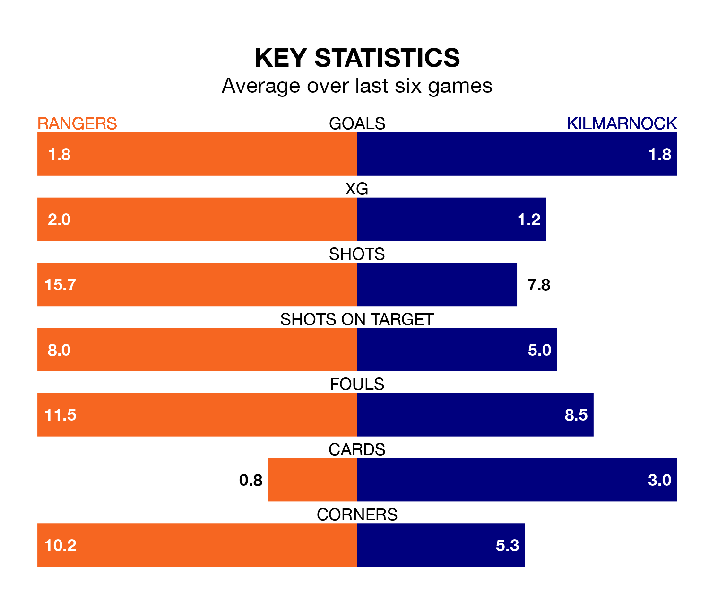

Two of the Premiership's top sides face each other at the Ibrox Stadium in Sunday lunchtime's kick-off, when second-placed Rangers host fourth-placed Kilmarnock.
Rangers have picked up 25 wins and three draws from 34 games so far this season, and sit 26 points above the visitors going into the 1pm match.
Killies, meanwhile, have won 13 and drawn 13, picking up 52 points.
With 74 goals in 34 games so far this season, Rangers are the league's second-highest scorers with 2.2 goals per game. And they are conceding fewer than average, letting in 24 goals at a rate of 0.7 per game.
Kilmarnock, meanwhile, are average scorers, with 1.3 goals per game. They have conceded 1.0 goal per game.
With Jack Butland between the sticks, the hosts can rely on one of the league's safest pair of hands. He has kept 18 clean sheets in his 34 appearances this season, and no 'keeper has prevented the opposition scoring more often in the Premiership.
In Killies's net, Will Dennis has 13 clean sheets in 33 games. He has conceded a goal every 104 minutes, 20% more often than the 128 minutes between goals for Butland.
In the last 10 years, Rangers and Kilmarnock have played each other on 24 occasions. Rangers won 13 of them, Kilmarnock six, and they drew five times.
On average, Rangers scored 1.5 goals and Killies 0.9 in those matches.
Their last meeting was on February 28, when Rangers won 2-1 away.
Rangers are in mixed form in the Premiership, with two wins and two draws from their last six games.
With three wins and three draws over that period, the away side's form is better – they have taken 12 points from 18, compared to Rangers's eight.
Rangers's last match was on April 28, a 2-1 win against St. Mirren, with Cyriel Dessers and James Bolton (own goal) getting the goals for Rangers.
Kilmarnock drew 0-0 with Hearts last time out, on April 27.
Updated: 10:44 (UTC), 30/04/24